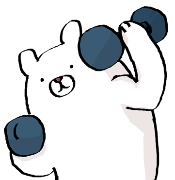
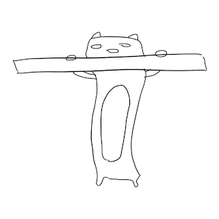
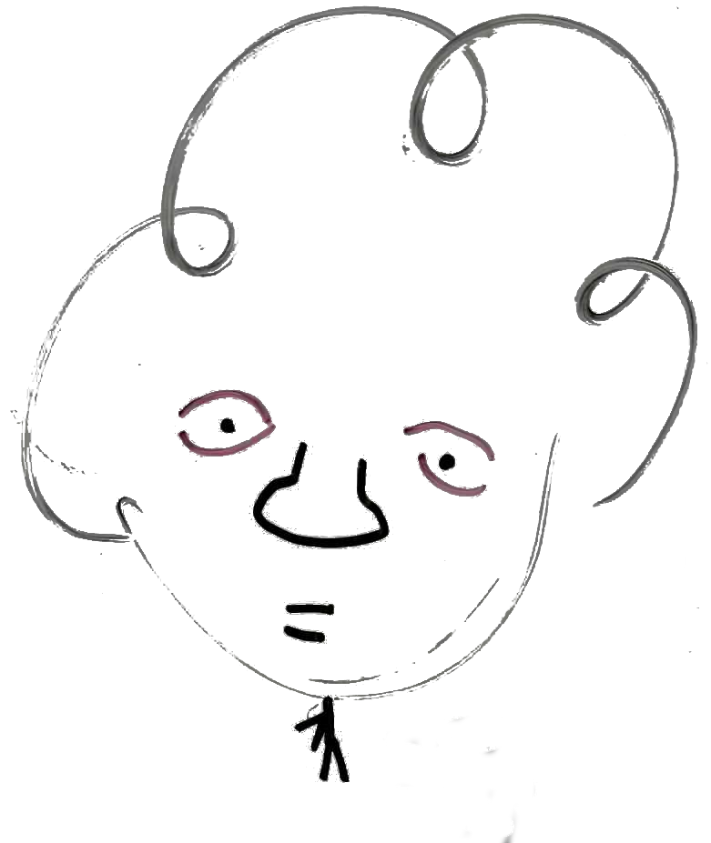
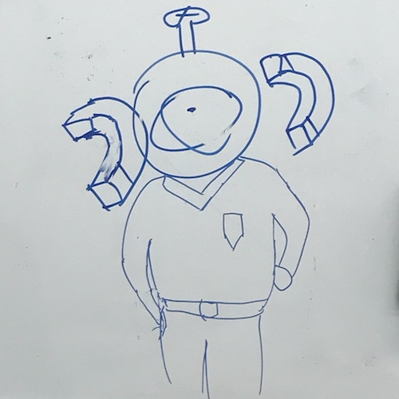

Member
部員募集中！
新規部員は1年365日地球が何回回った日でも募集しております！
興味のある方はメールやTwitterなどでお気軽にご連絡ください。
直接部室に来ていただいても構いません！
会員構成（2019年度）
現役
| 1回生 | 理工学部 | 機械工学科 | 1名 |
| 理工学部 | 物理科学科 | 4名 | |
| 2回生 | 理工学部 | 機械工学科 | 1名 |
| 理工学部 | 電気電子工学科 | 1名 | |
| 3回生 | 理工学部 | 電気電子工学科 | 1名 |
| 情報理工学部 | 1名 | ||
| 4回生 | 理工学部 | 物理科学科 | 2名 |
| 理工学部 | ロボティクス学科 | 1名 | |
| M1回生 | 理工学研究科 | 基礎理工学専攻 物理科学コース | 1名 |
最近の卒業生
| 18年度卒 | 電気電子工学科 | 2名 |
会員リスト（工事中）
19年度会長：にっしー
 |
所属：理工学部 物理科学科 4回生 出身地：Zipangu 研究分野：物理 趣味：睡眠・将棋 好きなもの：カレーメシ、ビーフジャーキー いつかやりたいこと：熊本県で馬刺しを食べたい！！ 極上のアニメ：美味しんぼ | 一言：よーし、みんな集合だ☆ |
19年度副会長(会長補佐)：嬢@(っ'ヮ'c)
所属：理工学部 機械工学科 2回生 出身地：京都 趣味：自転車、山、オーディオ 好きなもの：ベルヌーイの定理 座右の銘： 将来の野望： 極上のアニメ：けいおん, PSYCHO-PASS | 一言：自由の刑に処されている。 |
19年度も会計：ぬこやま
 |
所属：理工学部 物理科学科 4回生 出身地：大阪府の郊外 趣味：ソシャゲ 好きなもの：ステーキ、チョコ、豚骨醤油 座右の銘：迷ったらやらない 過去のテーマ：ゼータ関数 極上のアニメ：苺ましまろ、わたてん | 一言：2次元と10次元に興味があります。 |
19年度名誉会長：くま
所属：理工学研究科 基礎理工学専攻 物理科学コース 1回生(要はM1) 出生地：アメリカ合衆国ピッツバーグ 趣味：思考実験、旅行 好きなもの：おもしろそうなもの 座右の銘：まだ未定 将来の野望：世界のあらゆるものを作る 極上のアニメ：ノーゲームノーライフ | 一言：物理楽しいー |
19年度主務：HD
 |
所属：理工学部 ロボティクス学科 4回生 出身地：にぼ次郎 趣味：ロボット製作 好きなもの：にぼ次郎 座右の銘：ないから作るんですよ 将来の野望：地球征服 極上のアニメ：ケロロ軍曹 | 一言：行きます行きます行きますゝゝゝゝ…… |
☆New member：藤木
所属：理工学部 物理科学科 1回生 出身地：広島 趣味：ゲーム 好きなもの：入間一間さんの小説 座右の銘：単純な 馬鹿でありたい 将来の野望：教職員になってダラダラ暮らしたい 極上のアニメ：あっちこっち | 一言：日々、私たちが過ごしている日常は、実は奇跡の連続かもしれない。 |
☆New member：なすび
所属：理工学部 物理科学科 1回生 出身地：栃木 趣味：同人誌漁り 好きな分野：天文学 座右の銘：失敗から学ぶのは失敗の仕方だけ ギレンの野望：好きだけどクリア出来ん… 極上のアニメ：コードギアス | 一言：パーカーは至高 |
☆New member：こうき
所属：理工学部 機械工学科 1回生 出身地：こうべ 特技：ルービックキューブ 信仰：Apple 座右の銘：Life isn't worth living, unless it's lived for someone else. 将来の野望： 極上のアニメ：レールガン | 一言：BKC遠い |
☆New member：N君
所属：理工学部 物理科学科 1回生 出身地：岡山 趣味：歳差運動 嫌いなもの：蚊 座右の銘：強く生きる 将来の野望： 極上のアニメ：星のカービィ | 一言： |
☆New member：Y君
所属：理工学部 物理科学科 1回生 出身地：滋賀 趣味：旅 好きなもの：公理 座右の銘：格物究理 将来の野望： 極上のアニメ：ねこぢる劇場 | 一言：無明の闇 |
名誉会員
18年度卒：8-bit HND
 |
卒業：理工学部 電気電子工学科 進学先：奈良先端科学技術大学院大学 出身地：kyushu Fukuoka 趣味：C言語 好きなもの：yunomi sound, 計算機 将来の野望：コンピュータで世界崩壊♪ 極上のアニメ：じょしらく、ユーフォ | 遺言：そっちが盛り上がることを祈ってるわ |
18年度卒：okd先輩
卒業：理工学部 電気電子工学科 就職先： 出身地： 趣味： 過去の役職：会計 過去のテーマ：ロケット燃料 極上のアニメ：グリザイア | 遺言： |
連絡先：
vuccaken@gmail.com
Twitter：
@vuccaken